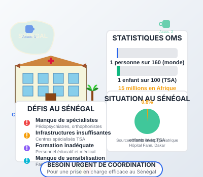
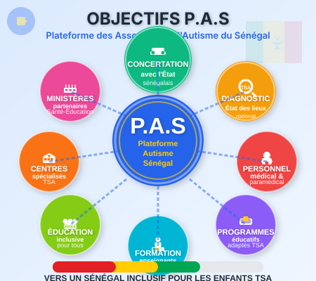
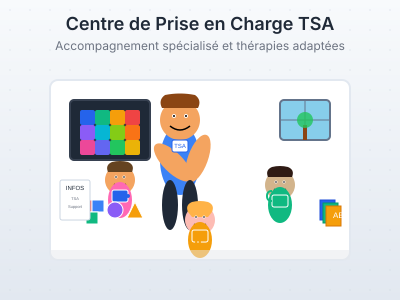

Journée Mondiale de l'Autisme — 2 Avril 2026
Retour sur la mobilisation à Dakar : conférences, projections et sensibilisation.
Voir les témoignages« Ensemble pour une société plus inclusive où chaque personne compte »

« Ensemble pour une société plus inclusive où chaque personne compte »
Fédérer les associations intervenant dans l'autisme du Sénégal pour améliorer la prise en charge des enfants TSA à travers le plaidoyer, la formation, le partage de ressources et la sensibilisation du public.
Fédérer les actions des associations engagées dans le domaine de l'autisme afin de promouvoir une société inclusive, équitable et respectueuse des droits des personnes autistes, à travers le plaidoyer, la sensibilisation, le renforcement des capacités et l'amélioration de l'accès aux services éducatifs, sanitaires et sociaux.
Nous coordonnons les efforts des différentes parties prenantes pour que des actions concrètes soient posées par les autorités. Nous devons parler d'une seule et même voix afin de mieux porter la problématique de l'autisme.

Unir les associations pour plus d'impact
Une société où chaque personne compte
Meilleure prise en charge des enfants TSA
L'autisme est une pathologie qui commence à prendre de l'ampleur dans le monde. Selon l'OMS, 1 personne sur 160 est atteinte d'autisme dans le monde, 1 enfant sur 100 souffre des Troubles du Spectre de l'Autisme (TSA), et 15 millions de personnes sont touchées par l'autisme en Afrique.
Au Sénégal, le peu de statistiques que nous avons à disposition renseignent que "0,8% des enfants en bas âge sont touchés par l'autisme" selon le Centre pédopsychiatrique de l'hôpital Fann.
L'autisme prend de l'ampleur à travers le monde
0,8% des enfants sénégalais concernés
Plusieurs associations mobilisées
Fédérer les actions des associations engagées dans le domaine de l'autisme afin de promouvoir une société inclusive, équitable et respectueuse des droits des personnes autistes, à travers le plaidoyer, la sensibilisation, le renforcement des capacités et l'amélioration de l'accès aux services éducatifs, sanitaires et sociaux.

Créer un cadre de concertation pérenne avec l'État
Inciter les autorités à faire un état des lieux de la situation des enfants
Faire le plaidoyer pour renforcer le personnel médical et paramédical
Accompagner l'État dans l'élaboration de programmes d'éducation adaptés à l'autisme
Aider à renforcer les capacités du corps enseignant sur la prise en charge pédagogique
Amener l'État à mettre en place un véritable système d'éducation inclusive
Amener les autorités à renforcer les infrastructures éducatives spécialisées

Harmoniser et organiser les efforts de toutes les associations membres pour maximiser l'impact
Alerter les décideurs sur l'urgence de la prise en charge des enfants TSA
Défendre les droits des personnes autistes auprès des institutions publiques
Établir des mécanismes permanents de dialogue avec les institutions publiques
Accompagner les associations dans la mise en œuvre de leurs activités
Faciliter les échanges réguliers avec les institutions publiques
Renforcer les capacités des associations sur les nouvelles pratiques et outils de l'autisme
Mettre en relation les associations avec de potentiels bailleurs de fonds
L'autisme dans le monde et au Sénégal : événements, témoignages, presse et mobilisation.
Retour sur la mobilisation à Dakar : conférences, projections et sensibilisation.
Voir les témoignagesCouverture média et enregistrements de la plateforme autour de l'inclusion TSA.
Regarder15 millions de personnes touchées par l'autisme en Afrique selon l'OMS — un défi de santé publique continental.
OMSDakaractu, Seneweb et médias locaux relaient le combat des familles et de la P.A.S.
Lire les articlesOutils et répertoires pour accompagner les familles et professionnels
Jeux éducatifs et ludiques adaptés aux enfants avec TSA pour stimuler l'apprentissage et le développement
AccéderListe des médecins spécialisés dans l'autisme et les troubles du développement au Sénégal
ConsulterOrthophonistes, psychomotriciens, ergothérapeutes et autres professionnels spécialisés
ConsulterÉtablissements scolaires et centres d'apprentissage adaptés aux enfants avec TSA
ConsulterLes répertoires sont régulièrement mis à jour pour vous offrir les informations les plus récentes. Si vous êtes un professionnel et souhaitez être référencé, ou si vous constatez une information erronée, n'hésitez pas à nous contacter.
Nous contacterVotre don aide à améliorer la vie des enfants avec TSA au Sénégal
La plateforme des associations intervenant dans le domaine de l'autisme au Sénégal vous invite à rejoindre notre mouvement pour améliorer la prise en charge des enfants vivant avec les TSA.
+1 (551) 331-9306
+221 77 204 58 50
+221 77 657 82 75
Liberté 6 Villa N°7974
Dakar, Sénégal